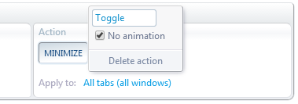

ACtl.setTabState
Sets, unsets or toggles various boolean states of tabs and windows. Such as active, pinned, minimized, etc.
ACtl.setTabState(tabSpec,states[,mode][,animate]) tabSpec Type: TabSpec
One or more tabs to change their state. It can be either a tab ID, a filter object, a tab-selection name or an array combining all that. Full details at Tab Specifier.
states Type: string
One or more states to set, unset or toggle (according to the mode argument). Multiple states must be separated by a space character.
Valid states are:
| Tab states
|
|---|
| active | pinned
|
| selected | muted
|
| Window states
|
|---|
| focused | minimized | restored | hidden
|
| topmost | maximized | fullscreen |
|
Window states are applied to the window containing the tab, not to the individual tab.
The restored state doesn't have an opposite state. i.e. there's no "unrestored" state.
Hence, it can be set, but not unset or toggled.
mode Type: boolean | number Default: true
| true | Set the state
|
| false | Unset the state
|
| -1 | Change to the opposite state (toggle)
|
animate Type: boolean Default: true
Enable or disable the animation effect when minimizing, maximizing or restoring a window.
It can be disabled globally in the OS settings, in which case this argument has no effect.
Returns Type: Promise Resolves to: number
Returns immediately. The Promise will resolve with the number of tabs given by tabSpec (which may be zero or more).
Throws Type: string
Error description if tabSpec is not a valid Tab Specifier or if states contains an invalid state name.
Examples
Pin, activate and focus the first tab that's playing video or audio.
let firstAudibleTab = ( await ACtl.getTabIds('#audibleTabs') ).slice(0, 1) ;
let tabCount = await ACtl.setTabState(firstAudibleTab, 'pinned active focused') ;
if( tabCount==0 ) alert("There's no audible tab!") ;
Minimize all non-minimized windows and unminimized all minimized windows. i.e. exchange the visibility of two disjoint sets of windows.
ACtl.setTabState('#allTabs', 'minimized', -1, false) ;
The above line of code is equivalent to doing this in the GUI:

 Forum
Install now from theChrome Web Store
Forum
Install now from theChrome Web Store